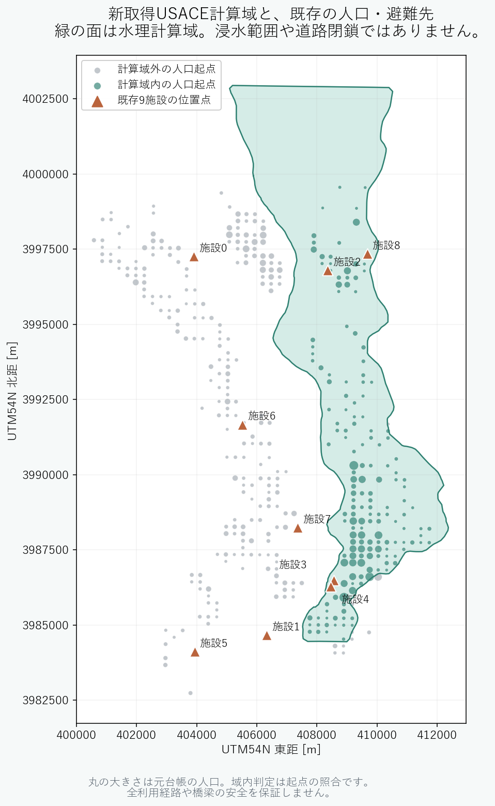

新取得 / 水理再現計算
USACE水位・地形
865時点から実時間6時間の73時点を抽出。水位−地形を全lane・5m以下間隔で照合。
実測ではありません。原本の時差タグは無くJSTはイベント照合から解釈。B採用・入力/smoke PASS実績保持・本実験は時刻境界判断待ちHOLD
本実験はR0・R1・R2 × 5seedの15セル。最新の実行状態はcontext.mdを参照。
865時点から実時間6時間の73時点を抽出。水位−地形を全lane・5m以下間隔で照合。
実測ではありません。原本の時差タグは無くJSTはイベント照合から解釈。167起点。Type4は544人。元のTypeと4,424台の乗員割当を保持。
元21,539人のうち域外9,574人を別台帳へ。現在人口の実測ではありません。OSM橋梁/トンネルの路面高未検証edge等は移動網から隔離し、人物は分母に保持。
モデルの制約です。現実の不通・建物の安全を証明しません。2015年9月10日12:50–18:50 JST。1実秒=1sim秒。外部edge17,812、車道0.5m・徒歩0.1mの初回到達で閉鎖、native300秒の区間を保持。
外周104退出境界を施設と別に登録。退出を主分子へ加えず分母へ保持。内部の橋梁隔離による切断は退出先にしません。
同じ人物・終点・準備時刻・選択者・洪水・容量。利用50%、セダン4台、乗降各300秒などは明示した仮定。
True表は物理制御・独立監査へ。R2だけがTrue閉鎖時刻＋900秒の予測を配車へ利用。
900秒は閉鎖時刻の予測誤差です。移動支援追加なし。
選択者が徒歩からJDRTへ。未来閉鎖を配車に使用しない。
R1と同じ需要・車両。予測項と厳密不等号Gateを追加。
全人物・要求・乗員・有限容量会計、全候補のGate採否、全対象道路の0台/欠測を区別した60秒表、全stepの閉鎖後進入と曖昧遷移を保存。
独立検証 → 6ファイル正式記録 → 次の1セル。15分監視、途中・終了・異常を記録。5seedが揃う前に方式の方向差を解釈しません。
域内Type4全544人の、6時間以内の域内施設受入率。退出・満員・不能も分母へ保持。全市の安全な避難完了率とは解釈しません。
以下は計算域照合の参照図。Bでは緑域内の起点と4施設を採用します。緑は浸水範囲ではありません。

正式PAP ／ Parameter Registry ／ 準備・失敗・検証の詳細記録 ／ Markdown図解 ／ 現状把握